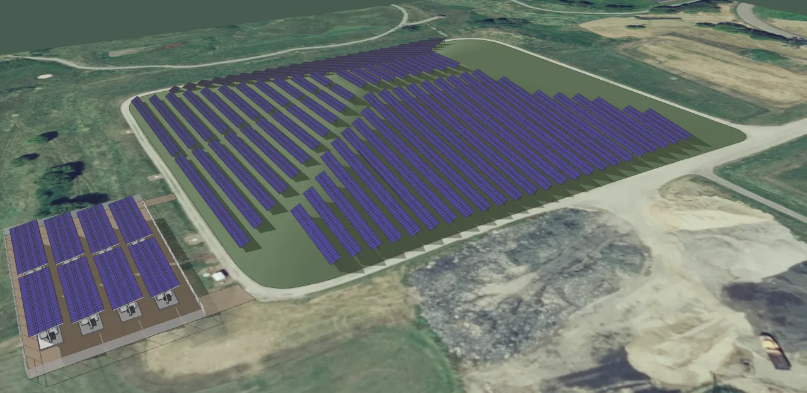

▲ 테슬라 메가팩 설치 현장 — 신형 메가팩3는 동일한 부지 면적에서 기존 대비 28% 많은 전력을 저장할 수 있다
테슬라의 대형 에너지저장장치(ESS) '메가팩'의 3세대 모델인 메가팩3가 텍사스 브룩셔 신공장에서 본격 생산에 들어갔습니다. 가장 큰 변화는 저장용량입니다. 단일 메가팩3의 저장용량은 약 5MWh로, 기존 메가팩2 XL의 3.9MWh 대비 28% 늘었습니다. 같은 면적의 부지에 더 많은 전력을 저장할 수 있게 됐다는 뜻으로, 1에이커당 최대 248MWh의 저장용량을 배치할 수 있다는 게 테슬라 측 설명입니다.
1. 저장용량 28% 확대, 무엇이 바뀌었나
메가팩3의 용량 증가는 배터리 셀 자체의 변화에서 비롯됩니다. 기존보다 용량이 큰 2.8리터 규격 셀을 적용하면서, 같은 컨테이너 크기 안에 더 많은 에너지를 담을 수 있게 됐습니다. 단순 수치로는 3.9MWh에서 5MWh로 늘어난 것이지만, 실제 발전소·유틸리티 현장에서는 부지 면적당 저장 가능한 전력량이 28% 늘었다는 의미가 더 큽니다. 태양광·풍력 같은 재생에너지 저장 시설은 부지 확보 자체가 비용인 경우가 많아, 이 같은 밀도 개선은 실질적인 원가 절감으로 이어집니다.
2. '메가블록'이라는 새 단위, 20MWh의 정체
이번 메가팩3 세대에서 새롭게 등장한 개념이 '메가블록'입니다. 메가팩3 최대 4개를 묶어 약 20MWh 규모로 구성하는 단위인데, 단순히 여러 대를 나란히 배치하는 것과는 다릅니다. 메가블록은 메가팩3와 변압기, 개폐 장치까지 공장에서 하나의 시스템으로 미리 조립해 출하합니다. 기존에는 이런 부속 설비들을 현장에서 개별적으로 연결해야 했지만, 메가블록은 이 과정을 공장 단계로 옮긴 것입니다. 현장 작업이 줄어드는 만큼 설치 기간과 인건비 모두를 절감할 수 있는 구조입니다.
| 항목 | 수치 |
|---|---|
| 단일 메가팩3 저장용량 | 약 5MWh(28%↑) |
| 메가블록(4개 결합) 저장용량 | 약 20MWh |
| 최대 배치 밀도 | 1에이커당 248MWh |
| 냉각 연결 지점 | 기존 대비 78% 감소 |
| 현장 설치 속도 | 기존 대비 약 23% 향상 |
| 1GWh 시설 구축 기간 | 영업일 기준 약 20일 |
| 텍사스 브룩셔 공장 생산능력 | 연간 50GWh |

▲ 메가팩3 여러 대를 묶은 배치 모습 — 4대를 결합하면 약 20MWh 규모의 '메가블록' 단위가 된다
3. 냉각 연결점 78% 감소가 중요한 이유
스펙표에서 눈에 띄지 않기 쉽지만, 실제 운영 측면에서 중요한 수치는 냉각 시스템의 연결 지점 감소입니다. 기존 대비 78%나 줄었는데, ESS 화재 사고의 상당수가 냉각 시스템의 결함이나 연결부 누수에서 비롯된다는 점을 감안하면 이는 단순한 효율 개선을 넘어 안전성과 직결되는 변화입니다. 연결 지점이 적을수록 장기적으로 유지보수해야 할 잠재적 고장 포인트도 줄어듭니다. 대형 배터리 저장 시설의 안전 기준이 아직 초기 단계에 머물러 있다는 지적이 꾸준히 나오는 상황에서, 이런 구조적 개선은 업계 전반의 안전 기준 강화 흐름과도 맞닿아 있습니다.

▲ 태양광 시설과 결합된 메가팩 단지 — 재생에너지의 간헐성을 보완하는 대표적인 활용 사례다
4. 착공 16개월 만에 가동, 텍사스 브룩셔
메가팩3를 생산하는 텍사스 브룩셔 신공장은 착공 후 약 16개월 만에 생산을 시작했습니다. 완공 시 연간 생산능력은 50GWh에 달할 전망입니다. 테슬라는 이미 네바다와 상하이에서도 메가팩을 생산하고 있는데, 브룩셔 공장이 본격 가동되면 북미 지역의 ESS 공급망이 한층 두터워질 것으로 보입니다. 특히 미국 내 데이터센터·AI 인프라 확충으로 전력 수요가 급증하는 상황에서, 대형 배터리 저장 시설에 대한 수요도 함께 늘어나는 흐름과 맞물립니다.
5. 진짜 핵심은 용량이 아니라 '설치 속도'
메가팩3의 여러 개선 사항 중 가장 실질적인 파급력을 가진 것은 결국 설치 속도입니다. 메가블록을 활용하면 기존 방식 대비 약 23% 빠른 설치가 가능하고, 1GWh 규모 시설을 영업일 기준 약 20일 만에 구축할 수 있습니다. 유틸리티 기업 입장에서는 저장용량 자체보다, '얼마나 빨리 전력망에 배터리를 투입할 수 있는가'가 실제 사업성을 좌우하는 경우가 많습니다. 재생에너지 확산과 전력 수요 급증이 동시에 벌어지는 지금, 테슬라가 메가팩3에서 강조하는 것은 스펙표의 숫자보다 '얼마나 빨리 지을 수 있는가'라는 실전 경쟁력인 셈입니다.